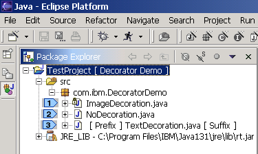
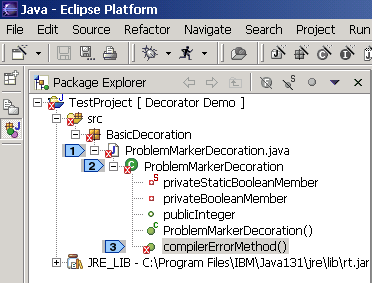
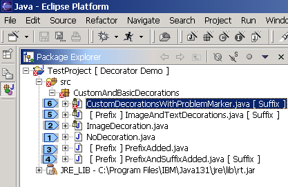
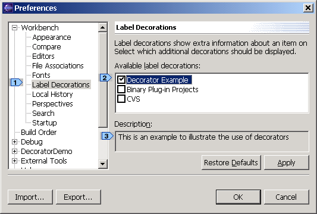
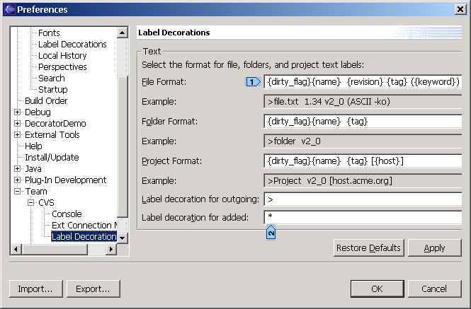
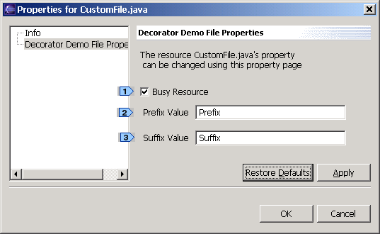
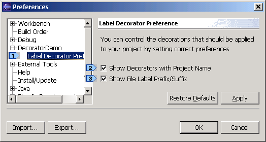
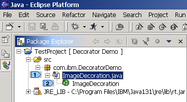
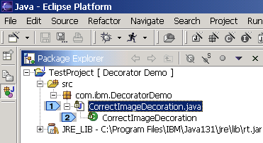
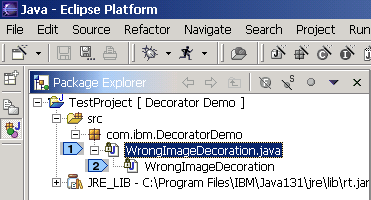

| Eclipse Corner Article |

Summary
Decorators, as the name suggests, are used for adorning/annotating resources with useful information. Decorators can be used by plug-ins to convey more information about a resource and other objects displayed in different workbench views. This article, with the help of a simple plug-in example, will illustrate the steps involved in decorating resources, along with some best practice approaches for decorating resources. Finally, we will discuss performance issues that may arise when enabling decorators, and briefly go over the new Lightweight decorators found in Eclipse 2.1.We assume the reader already has a basic understanding of Eclipse and knows how to create simple plug-ins.
Balaji Krish-Sampath, IBM
January 16, 2003

Fig. 1: Simple Decorator Example
In the Fig. 1, a lock icon is superimposed on the Java icon image ( )
of the file ImageDecoration.java. A prefix and a suffix label are added for
the file TextDecoration.java (
)
of the file ImageDecoration.java. A prefix and a suffix label are added for
the file TextDecoration.java ( ).
The file NoDecoration.java does not have any custom decoration (
).
The file NoDecoration.java does not have any custom decoration ( ).
).
With the help of a simple example, this article will provide a step by step
approach to decorating resources. Since the performance of the UI is affected
by the speed with which decorations are performed, we will concentrate on the
approaches that should be followed to make decoration efficient. Decoration
can be performed on resources and other objects displayed in Eclipse views.
Although the article illustrates most of the concepts with reference to decorating
a resource, decorations are not limited to resources and same technique can
be applied to decorate all the objects displayed in Eclipse views.
Now that we know some of the basic decorations provided by Eclipse, let's revisit the package explorer view.

Fig. 2: Basic Decorations
The figure shown above clearly illustrates the wealth of information that Eclipse
provides on resources and other objects contained in the workspace. This
ranges from information regarding the type of resource (a file or a folder or
a project), type of file (a Java file or a text file) and various Java elements.
In the figure shown above, a problem marker is superimposed on the compilation
unit ( ), Java class element
(
), Java class element
( ) and method (
) and method ( ).
The problem marker decoration on the compilation unit indicates that the compilation
unit named ProblemMarkerDecoration.java has compilation errors. The problem
marker decoration on the compilationErrorMethod() method (
).
The problem marker decoration on the compilation unit indicates that the compilation
unit named ProblemMarkerDecoration.java has compilation errors. The problem
marker decoration on the compilationErrorMethod() method ( )
indicates the method failed to compile. By viewing the
Package Explorer view with basic decorations provided by Eclipse, users can
get details like reasons for compilation errors in a Java file.
)
indicates the method failed to compile. By viewing the
Package Explorer view with basic decorations provided by Eclipse, users can
get details like reasons for compilation errors in a Java file.
Let's revisit the Package Explorer view to understand more on text and label decorators.

Fig. 3: Image and Text Decorators
In the figure shown above, custom decorations are applied
to the base decorations provided by Eclipse.
The file NoDecoration.java does not contain any contain any decoration ( ).
The file ImageDecoration.java has a lock icon (image decoration) superimposed
on the Java icon image (
).
The file ImageDecoration.java has a lock icon (image decoration) superimposed
on the Java icon image ( ). The files
PrefixAdded.java and PrefixAndSuffixAdded.java have text decorations added to
their labels (
). The files
PrefixAdded.java and PrefixAndSuffixAdded.java have text decorations added to
their labels (
 ).
The file ImageAndTextDecorations.java has both image decoration (a lock icon
superimposed on the compilation unit) and text decorations (a prefix and a suffix
added to base label) (
).
The file ImageAndTextDecorations.java has both image decoration (a lock icon
superimposed on the compilation unit) and text decorations (a prefix and a suffix
added to base label) ( ). The CustomDecorationsWithProblemMarker.java
has a problem marker decoration (basic decoration provided by Eclipse) as well
as custom image and text decorations (
). The CustomDecorationsWithProblemMarker.java
has a problem marker decoration (basic decoration provided by Eclipse) as well
as custom image and text decorations ( )
)
So, how did these decorations get there? Let's
start our quest for creating custom decorators.
| <extension point="org.eclipse.ui.decorators">
<decorator id="com.ibm.decoratordemo.ui.decorator.demodecorator" label="Decorator Example" state="false" class= "com.ibm.DecoratorDemo.ui.decorators.DemoDecorator" adaptable="true"> <description> This is an example to illustrate the use of decorators </description> </decorator> </extension> |
Enabling / Disabling Custom Decorators
Individual decorators can be turned on and off from the Label Decorations preference
page. Users can access this page by selecting Window->Preferences->Workbench->Label
Decorations ( ).
).

Fig. 5: Label Decorations Preference Page
The name of the decorator is the value of the label attribute of the
decorator extension (Fig. 4) while the description is the text contained in
the description sub-element. In the figure shown above, the "Decorator
Example" decorator is turned on ( ),
while the other decorations are turned off. Although the above-mentioned scenario
might be typical when the project is not shared with CVS repository, enabling
and disabling the decorators are extremely useful when the decorations performed
by two or more decorators conflict with each other. For example, the CVS plug-in
might decorate the base image by superimposing the base image with a custom
image while the "Decorate Example" plug-in might superimpose a different custom
image at the same position thereby conflicting with the CVS plug-in decoration.
If the decoration performed by two different decorators
on the same resource conflict, users should appropriately enable / disable different
decorators to get the required decoration.
),
while the other decorations are turned off. Although the above-mentioned scenario
might be typical when the project is not shared with CVS repository, enabling
and disabling the decorators are extremely useful when the decorations performed
by two or more decorators conflict with each other. For example, the CVS plug-in
might decorate the base image by superimposing the base image with a custom
image while the "Decorate Example" plug-in might superimpose a different custom
image at the same position thereby conflicting with the CVS plug-in decoration.
If the decoration performed by two different decorators
on the same resource conflict, users should appropriately enable / disable different
decorators to get the required decoration.
 It is very important to design
custom decorators that don't conflict with basic decorations provided by
different Eclipse views. For example, the package explorer view decorates
Java files with problem markers (a problem marker is placed at the bottom
left hand corner) if there are compilation errors. It is a bad practice
to decorate resources with custom decoration exactly at the position of
a problem marker and developers should avoid this. If
the custom decoration is performed at the bottom left corner, then custom
decoration and the problem marker decoration, if any, conflict each other
and hence users will not be able to view the decorations. The solution
to the above mentioned problem is to provide a custom image decoration
at the bottom right corner which does not conflict with the basic image
decoration provided by Eclipse. The top left corner is the second best
place although it conflicts with the binary project decorator. The bottom
left and top right should be avoided as they are decorated outside of the
decorator mechanism.
It is very important to design
custom decorators that don't conflict with basic decorations provided by
different Eclipse views. For example, the package explorer view decorates
Java files with problem markers (a problem marker is placed at the bottom
left hand corner) if there are compilation errors. It is a bad practice
to decorate resources with custom decoration exactly at the position of
a problem marker and developers should avoid this. If
the custom decoration is performed at the bottom left corner, then custom
decoration and the problem marker decoration, if any, conflict each other
and hence users will not be able to view the decorations. The solution
to the above mentioned problem is to provide a custom image decoration
at the bottom right corner which does not conflict with the basic image
decoration provided by Eclipse. The top left corner is the second best
place although it conflicts with the binary project decorator. The bottom
left and top right should be avoided as they are decorated outside of the
decorator mechanism.
Before we proceed further, let's take a closer look at the class that
provides custom decoration. As mentioned earlier, the name of the class
should be same as the value specified in the class attribute. The class
must implement ILabelDecorator.
| // Class extends LabelProvider because LabelProvider
// provides methods for getting images and text labels from objects public class DemoDecorator extends LabelProvider implements ILabelDecorator { public DemoDecorator() { super(); } // Method to decorate Image public Image decorateImage(Image image, Object object) { // Return null to specify no decoration return null; } // Method to decorate Text public String decorateText(String label, Object object) { // return null to specify no decoration return null; } } |
The default implementation can be used as a template to get started. The decorateImage() and decorateText() methods are used to decorate the image and text respectively. A detailed discussion on how to decorate a resource using these two methods is provided later.
 Contribute your custom decoration
via the decorator extension point in a plugin.xml manifest file (use
the example shown in previous section ). Create a class to implement
custom decoration (Fig. 6). Note that the Java class name should be
the same as the text value of the "class" attribute of the decorator
tag
in plugin.xml. Compile and run. You should be able to see your custom
decoration appear inside Window->Preferences->Workbench->Label Decorations
as shown in Fig. 5.
Contribute your custom decoration
via the decorator extension point in a plugin.xml manifest file (use
the example shown in previous section ). Create a class to implement
custom decoration (Fig. 6). Note that the Java class name should be
the same as the text value of the "class" attribute of the decorator
tag
in plugin.xml. Compile and run. You should be able to see your custom
decoration appear inside Window->Preferences->Workbench->Label Decorations
as shown in Fig. 5.

Fig. 7: CVS Decoration Preference Page
The figure shown above illustrates how plug-ins can use the individual label
decorator preference page to provide users the ultimate control over the decorations.
The CVS plug-in gives a user the control over the choice
of decorations, the richness in decorating different resources and the choice
of types of resources that need to be decorated. They can even control the look
and feel of decoration (
 ).
).
One of the important considerations while providing custom decorations is the performance of UI with and without decorators. Users can effectively use the individual decorator preference page to avoid decorations that are expensive to compute and thus enhance the performance.
 An individual decoration preference
page is extremely useful when resources are decorated on receiving external
events / notification. For example, a repository provider plug-in (e.g. org.eclipse.team.cvs.ui)
might be collaborating with an external server to decorate resources with a
lock icon, whenever resources are checked out by some other user. The repository
provider plug-in might be listening to thousands of events and it would be better
if the user has ultimate control on what to decorate (and what not to).
An individual decoration preference
page is extremely useful when resources are decorated on receiving external
events / notification. For example, a repository provider plug-in (e.g. org.eclipse.team.cvs.ui)
might be collaborating with an external server to decorate resources with a
lock icon, whenever resources are checked out by some other user. The repository
provider plug-in might be listening to thousands of events and it would be better
if the user has ultimate control on what to decorate (and what not to).
Since individual decoration preference pages are preference pages that are used to provide control to the users on decorations, they should be contributed via the preference pages extension point. Users can refer to the articles Preferences in the Eclipse Workbench UI by Tod Creasey and Simplifying Preference Pages with Field Editors by Ryan Cooper to learn more about preference pages and ways to create them.
The basic idea behind providing this example is to illustrate how to decorate images and text. To keep it as simple as possible, users are provided with a custom File Property page. The file property page has a custom page "DecoratorDemo File Property page" that provides a control for the users to set the "Busy" property (The "Busy" property indicates that the resource is busy and hence should not be modified). The page also provides controls for users to set the prefix and suffix values for the resource.

Fig. 8: Example Plug-in's File Property Page
Using the file property page (Fig. 8) (a file property
page can be opened by right-clicking the file and selecting properties in the
context menu), users can set the busy state for the file. The busy state
when set is indicated by a lock icon superimposed on the base image provided
by Eclipse. Users can set the prefix and suffix values of resource labels (
 ).
).
An individual label decoration preference page is provided for users to manage
the decorations (Fig. 9). They provide users control over prefix/suffix text
decoration  ) and project
label decoration (
) and project
label decoration ( ). The
project is decorated with a default text label decoration.
). The
project is decorated with a default text label decoration.

Fig. 9: Example Plug-in's Label Decoration Preference
Page
Now that we have been introduced to the example plug-in, let's go into details.
Before delving deep into actual methods that provide decorations, it is important to understand the concepts needed while decorating a resource.
Resources can have properties that hold state information. The properties of a resource are declared, accessed and maintained by various plug-ins and are not interpreted by the platform. There are two types of properties associated with a resource: persistent properties and session properties. Persistent properties, as the name suggests, are persistent across sessions while session properties are maintained in memory and are lost when the project or workspace is closed. Resource properties are deleted when the resources are deleted.
Depending on the utility of the plug-in, plug-in developers can use
persistent or session properties. Persistent properties are stored on disk
and hence are accessible across platform sessions. The example plug-in
requires the busy state of the resource to be persisted across sessions.
The persistent property resource API is used to store and retrieve property
values by key. The following figure shows how to set and get the persistent
properties.
| // Create a qualified Name for Busy state of the resource
QualifiedName q1 = new QualifiedName ("com.ibm.Decorator.DecoratorDemo", "Busy"); // Create a qualified Name for Prefix
// Set the persistent properties
// Get the value of persistent property q1... The value
|
The code snippet (shown above) explains how to set / get persistent property of resources using qualified names. A qualified name is analogous to a key used for accessing / storing property values. Qualified names are composed of two-part names, a qualifier and a local name. The local name (in the example shown above, the local names are "Busy" and "Prefix") could be used by any decorator. So it is extremely important to provide a unique URI value for the qualifier part. The simplest way to ensure a unique qualifier value is to use the id of your plug-in as the qualifier name.
 Where does Eclipse store resource persistent
properties? Eclipse stores resource persistent properties in an internal database
at "Workspace Location/.metadata/.plugins/org.eclipse.core.resources/.projects/Project
Name/.properties".
Where does Eclipse store resource persistent
properties? Eclipse stores resource persistent properties in an internal database
at "Workspace Location/.metadata/.plugins/org.eclipse.core.resources/.projects/Project
Name/.properties".
 Eclipse provides a mechanism
to store the sync information associated with a resource. Associating "sync
info" with a resource and decorating a resource using the sync information
is also an option plug-in developers might want to consider before proceeding
with use of persistent properties. Sync info maintains all the information
in memory and writes to disk only on save or a snapshot. Another advantage
of using sync info is that changes to sync information are reported in
the subsequent delta while it is difficult to keep track of the persistent
property resource changes. Readers can refer to "org.eclipse.core.resources.ISynchronizer"
to know more about sync info and ways to store sync information for a resource.
Eclipse provides a mechanism
to store the sync information associated with a resource. Associating "sync
info" with a resource and decorating a resource using the sync information
is also an option plug-in developers might want to consider before proceeding
with use of persistent properties. Sync info maintains all the information
in memory and writes to disk only on save or a snapshot. Another advantage
of using sync info is that changes to sync information are reported in
the subsequent delta while it is difficult to keep track of the persistent
property resource changes. Readers can refer to "org.eclipse.core.resources.ISynchronizer"
to know more about sync info and ways to store sync information for a resource.
 It
is a good idea to design your decorators so that they do not overlap or
conflict with the existing platform SDK decorators. For example,
Eclipse provides the problem marker decorator to alert users of compilation
problems. The custom decoration should not superimpose images at the same
position as the problem marker. The custom decoration
also should not lose the problem marker information. Since different
custom decorator providers don't have prior knowledge about one another,
there is a good chance that custom decoration from two different plug-in
providers will conflict each other. The Workbench label decoration page
and the individual preference page provided by different custom decorators
provide users the control over the choice of different decorations.
It
is a good idea to design your decorators so that they do not overlap or
conflict with the existing platform SDK decorators. For example,
Eclipse provides the problem marker decorator to alert users of compilation
problems. The custom decoration should not superimpose images at the same
position as the problem marker. The custom decoration
also should not lose the problem marker information. Since different
custom decorator providers don't have prior knowledge about one another,
there is a good chance that custom decoration from two different plug-in
providers will conflict each other. The Workbench label decoration page
and the individual preference page provided by different custom decorators
provide users the control over the choice of different decorations.
Eclipse provides an API for overlaying one image over other. The following code snippet explains how to overlay an icon image over another image.
| protected void drawCompositeImage(int width, int height)
{ // To draw a composite image, the base image should be // drawn first (first layer) and then the overlay image // (second layer) // Draw the base image using the base image's image
data
// Method to create the overlay image data |
The base image is drawn ( ) and then
the image that needs to be superimposed is drawn at the top left corner of the
base image (see
) and then
the image that needs to be superimposed is drawn at the top left corner of the
base image (see  ).
The
example plug-in code "OverlayImageIcon.java" implements superimposing
the custom images on the base image at different locations.
).
The
example plug-in code "OverlayImageIcon.java" implements superimposing
the custom images on the base image at different locations.
 It is always good to create the overlay
image icons (that need to be superimposed on the base image) once and share
the same image across different views. In the example shown below (Fig. 12),
an image descriptor for a lock icon is created and the image data is returned
when requested by the drawImage() method of OverlayImageIcon (Fig. 11). In this
way, custom images are shared among objects across different views. The best
practice approaches section also talks about the image registry and how
it can be best used to efficiently decorate resources with custom images.
It is always good to create the overlay
image icons (that need to be superimposed on the base image) once and share
the same image across different views. In the example shown below (Fig. 12),
an image descriptor for a lock icon is created and the image data is returned
when requested by the drawImage() method of OverlayImageIcon (Fig. 11). In this
way, custom images are shared among objects across different views. The best
practice approaches section also talks about the image registry and how
it can be best used to efficiently decorate resources with custom images.
| public class DemoImages
{ private static final ImageDescriptor lockDescriptor = ImageDescriptor.createFromFile (DemoDecorator.class, "lock.gif"); public ImageData getLockImageData()
|
In our example plug-in, a lock icon is superimposed on the base image if the
file has its "busy" property set. The figure shown below shows how a resource's
image icon would look in the package explorer view (Fig. 13). The lock icon
is superimposed on the compilation unit and the runtime class instance of ImageDecoration.java
(
 )
)

Fig. 13: Superimpose a lock decorator
The properties of a resource might change at runtime, which will trigger the
need for redecoration. For example, users might change a file's busy attribute
using the file property page - and therefore the image decoration must be changed
to reflect the change. To re-decorate the resources, we fire a LabelProviderChangedEvent.
The fired event notifies the different workbench views that the label provider
for the resource has changed. Eclipse calls the decorateImage()
and decorateText() methods for the resources whose label provider has changed.
A LabelProviderChangedEvent should only be fired when some aspect of the element
used to do the decoration changes. They can also be fired when the labels need
to be updated due to a change in decoration presentation (e.g. due to a change
in a preference page for the decorator). Sending these events will update all
affected views.
| public void refresh(List resourcesToBeUpdated)
{ // resourcesToBeUpdated is a list of resources whose decorators // need to be changed. The persistent property of the resources // has been changed and hence its decorators should change // Check to see whether the custom decoration is enabled
// Fire a label provider changed event
to decorate the
private void fireLabelEvent(final LabelProviderChangedEvent
event)
|
A LabelProviderChangedEvent is triggered ( )
to notify different views that the label provider for the resources (in the
figure shown above, the resources list is stored in resourcesToBeUpdated) has
been changed and hence they need to be re-decorated. The plug-in developers
must provide a Runnable that fires a labelProviderChanged event (
)
to notify different views that the label provider for the resources (in the
figure shown above, the resources list is stored in resourcesToBeUpdated) has
been changed and hence they need to be re-decorated. The plug-in developers
must provide a Runnable that fires a labelProviderChanged event ( ).
).
If users choose to change the decoration preference
using the individual decoration preference page, all the resources
in the workspace need to be re-decorated. This could be done easily by
changing line  in Fig. 14 to fireLabelEvent (new LabelProviderChangedEvent (demoDecorator)).
in Fig. 14 to fireLabelEvent (new LabelProviderChangedEvent (demoDecorator)).
| /**
* Gets the custom decorator object. This method should be called to get * the custom decorator object by all methods that try to decorate resources * @return Custom Decorator Instance if the custom decorator is enabled * null if the custom decorator is not enabled */ public static DemoDecorator getDemoDecorator() { IDecoratorManager decoratorManager = DecoratorPlugin.getDefault().getWorkbench().getDecoratorManager(); // com.ibm.decoratordemo.ui.decorator.demodecorator is the
id of the
// If the decorator is disabled, a null value is returned
} |
The custom decorator class used for decorating resources
is a singleton. The decorator developers should not use the decorator object
(instance of the class used for decorating resources) when the decorator is
disabled. The decorator developers should never cache the decorator object.
The decorator object is disposed when the decorator is disabled and is recreated
when the decorator is re-enabled. The utility method getLabelDecorator() returns
a null value if the custom decorator is disabled or a custom decorator with
the given decoratorId does not exist ( ).
).
Images that are added to or retrieved from the registry must not be
disposed by any client. The registry is responsible for disposing of the
image since the images are shared by multiple clients. The registry will
dispose of the images when the platform GUI system shuts down. Appropriate
use of image descriptors and the image registry is important while performing
decorations. Since many views participate in decoration, it is important
to share the images using the caching mechanism rather than creating images
from scratch.
The interface provides two utility methods to decorate the text and image.
| public Image decorateImage(Image baseImage, Object object)
{ // This method returns an annotated image or null if the // image need not be decorated. Returning a null image // decorates resource icon with basic decorations provided // by Eclipse IResource objectResource;
// The image should be disposed when the plug-in is
|
The decorateImage() method (shown above) decorates only a file object and does
not decorate a project or a folder ( ).
The IResource object (
).
The IResource object ( ) is used for
determining whether the object under consideration is a project / folder / file.
Using the OverlayImageIcon class (not shown), a lock decorator is superimposed
on the base image (
) is used for
determining whether the object under consideration is a project / folder / file.
Using the OverlayImageIcon class (not shown), a lock decorator is superimposed
on the base image ( )
)
| public String decorateText(String label, Object obj)
{ IResource objectResource; objectResource = (IResource) object; if (objectResource.getType() != IResource.FILE) // Decorate the label of the resource with the admin name
|
The decorateText() method returns null (no decoration) for non-files. It decorates
the label of a file with owner information. Returning a null value signifies
that the decorator is ignored - it does not clear out any existing decorations.
In our example, it is advantageous for the users to know about the files
that are changed by others. But can they afford to lose 0.5 seconds for
every decoration? No. So the plug-in developers, rather than
decorating the image icon, can present the information to the user in a
different way, for example, the file properties view. Improper use of decorators
can lead to poor performance and will ultimately lead to plug-in decorators
becoming useless.
 Decorations are performed when
workbench starts initially. It is called when users open a resource, close
a resource, expand the resource tree etc.
Decorations are performed when
workbench starts initially. It is called when users open a resource, close
a resource, expand the resource tree etc.
Image caching, although a good technique to reduce the time involved in decorating resources is not without problems. Some of the inherent problems associated with decoration using image caching approach are as follows:
| <extension point="org.eclipse.ui.decorators">
<decorator id="YourDecorator" label="Decorator Label" state="false" class="YourDecorator.class" objectClass="org.eclipse.core.resources.IResource" adaptable="true"> </decorator> </extension> |
The attributes that are of interest are: objectClass and adaptable. ObjectClass indicates the class of resources that need to be decorated. The adaptable flag indicates whether the classes that adapt to the IResource object should also be decorated.
 If a user tries to decorate a Java file
in a navigator view, the decorateImage() and decorateText() methods are called
on the IFile object. If the user tries to decorate the Java file in a package
explorer, the decorateImage() and decorateText() methods are called on all the
Java elements (because all Java elements are adaptable to IFile objects).
If a user tries to decorate a Java file
in a navigator view, the decorateImage() and decorateText() methods are called
on the IFile object. If the user tries to decorate the Java file in a package
explorer, the decorateImage() and decorateText() methods are called on all the
Java elements (because all Java elements are adaptable to IFile objects).
Let's see what happens when a user decorates a Java file and the adaptable attribute is set to true. The decorateImage() method is called on all the Java elements for the resource (JavaProject, PackageFragmentRoot, PackageFragment, CompilationUnit (Java file), and runtime class). If the adaptable flag is true, the object parameter passed to the decorateImage() and decorateText() methods is an IResource object for compilationUnit and runtime class while a null is passed for all the other Java elements.
So what's the problem? Let us assume we cache the image (lock icon superimposed on a Java (Compilation Unit) icon) with the property "Java Lock" to denote that it is Java file with a lock icon superimposed on the base image. You might have cached the image when decorateImage method was called on the compilation unit. When decorateImage() method is called on a class file, we get the same property information using the IResource object (Fig. 16) and hence we decorate the class file with the cached copy. So instead of getting a lock icon on top of a class icon, the class file image icon is represented by a custom lock decorator on top of a Java icon image. The following diagrams illustrate the aforesaid behavior.

Fig. 19: Overlaying Image without Image cache

Fig. 20: Overlay Image using Image Caching
From Fig. 19 and Fig. 20, it is clear that users should be careful while using
image caching with non-resource files. When image caching is used, the runtime
class is represented by a lock icon on top of the Java icon ( in Fig. 20) instead of a lock icon on top of the runtime class icon. Image caching
can't be used because there was no way to distinguish between the different
Java elements using the IResource object and its associated properties. To distinguish
between the Java elements, one has to depend on JDT core and write specific
adapters for Java elements.
in Fig. 20) instead of a lock icon on top of the runtime class icon. Image caching
can't be used because there was no way to distinguish between the different
Java elements using the IResource object and its associated properties. To distinguish
between the Java elements, one has to depend on JDT core and write specific
adapters for Java elements.
 Change plugin.xml provided
with the example plug-in such that the class that implements decoration
is DemoDecoratorWithImageCaching rather than DemoDecorator. The DemoDecorator
object instance used in the "file property page" and "individual label
decorations preference page" should be replaced with an instance of DemoDecoratorWithImageCaching.
You should be able to see decoration like the one shown in Fig. 20.
Change plugin.xml provided
with the example plug-in such that the class that implements decoration
is DemoDecoratorWithImageCaching rather than DemoDecorator. The DemoDecorator
object instance used in the "file property page" and "individual label
decorations preference page" should be replaced with an instance of DemoDecoratorWithImageCaching.
You should be able to see decoration like the one shown in Fig. 20.
Due to the above mentioned problems, image caching, although a good
technique to reduce the time involved in decorating resources should not
be used.
In Eclipse 2.0, plug-in developers had to programmatically overlay the custom images on top of the base image of the objects displayed in the Eclipse views. Eclipse 2.1 introduces a lightweight decorator that will handle the image management issues associated with decoration. It is also possible to declare a lightweight decorator that simply overlays an icon when enabled that requires no implementation from the plug-in. Lightweight decorators performs decorations in a background thread and hence the UI thread is not blocked when the decorations are performed.
Let's look at the configuration markup for decorators in Eclipse 2.1.
| !ELEMENT decorator >
<!ATTLIST decorator id CDATA #REQUIRED label CDATA #REQUIRED //deprecated. Make this part of the enablement "UNDERLAY") #OPTIONAL adaptable (true | false) #IMPLIED state (true | false) #IMPLIED > <!ELEMENT description (#PCDATA)> |
As you can see from Fig. 21, there are quite a few changes in the configuration
markup for decorators in Eclipse 2.1. The class which was a required field in
Eclipse 2.0 is an optional field in Eclipse 2.1( ).
The class attribute represents a fully qualified name of a class which implements
org.eclipse.jface.viewers.ILabelDecorator if lightweight is false or org.eclipse.jface.viewers.ILightweightLabelDecorator
if lightweight is true. The default value is false. If there is no class element
it is assumed to be true. The objectClass attribute is deprecated in Eclipse
2.1 and is part of the enablement element (
).
The class attribute represents a fully qualified name of a class which implements
org.eclipse.jface.viewers.ILabelDecorator if lightweight is false or org.eclipse.jface.viewers.ILightweightLabelDecorator
if lightweight is true. The default value is false. If there is no class element
it is assumed to be true. The objectClass attribute is deprecated in Eclipse
2.1 and is part of the enablement element ( ).
The icon attribute is a new attribute in Eclipse 2.1 and it represents the path
to the overlay image to apply if the decorator is lightweight (
).
The icon attribute is a new attribute in Eclipse 2.1 and it represents the path
to the overlay image to apply if the decorator is lightweight ( ).
Location attribute represents the location to apply the decorator if the decorator
is lightweight (
).
Location attribute represents the location to apply the decorator if the decorator
is lightweight ( ). The default value
of location is BOTTOM_RIGHT. Lightweight attribute can be used to signify whether
the decorator is lightweight or not (
). The default value
of location is BOTTOM_RIGHT. Lightweight attribute can be used to signify whether
the decorator is lightweight or not ( ).
Enablement sub-elements represent the actionExpression used to determine enabled
state (
).
Enablement sub-elements represent the actionExpression used to determine enabled
state ( ).
).
Let's look at an example to understand lightweight decorators.
| <extension point="org.eclipse.ui.decorators">
<decorator id="com.ibm.DemoLightweightDecorator" label="DemoLightweightDecorator" state="false" location="TOP_LEFT" <enablement>
|
Since the lightweight attribute has a true value ( ),
the class com.ibm.Demo.LightweightDecorator (
),
the class com.ibm.Demo.LightweightDecorator ( )
should implement org.eclipse.jface.viewers.ILightweightLabelDecorator. The class
com.ibm.Demo.LightweightDecorator should provide the text decoration labels
and the image descriptor and need not be concerned with the resource handling.
Another advantage of using Lightweight decorators is that the decoration work
is done in a background thread.
)
should implement org.eclipse.jface.viewers.ILightweightLabelDecorator. The class
com.ibm.Demo.LightweightDecorator should provide the text decoration labels
and the image descriptor and need not be concerned with the resource handling.
Another advantage of using Lightweight decorators is that the decoration work
is done in a background thread.
Let's look at the ILightweightLabelDecorator interface to see how easy decorations can be performed in Eclipse 2.1.
| org.eclipse.jface.viewers.ILightweightLabelDecorator interface:
The ILightweightLabelDecorator is a decorator that decorates using a prefix, suffix and overlay image rather than doing all of the image and text management itself like an ILabelDecorator.
|
From Fig. 23, it is clear that plug-in developers should implement decorate()
method ( ) to perform both text and image
decorations. This is a big difference from Eclipse 2.0 where plug-in developers
had to implement decorateText() for performing text decorations and decorateImage()
method for performing image decorations. One added advantage of the Eclipse
2.1 lightweight decorator mechanism is that plug-in developers need not be concerned
with resource handling and need only to provide the text and image descriptors.
When a plug-in developer tries to redecorate a resource by firing a LabelProviderChanged
event, Eclipse calls the decorate() method for the object. The plug-in developers
should appropriately set the overlay image descriptors, prefix label and the
suffix label using the IDecoration object instance.
) to perform both text and image
decorations. This is a big difference from Eclipse 2.0 where plug-in developers
had to implement decorateText() for performing text decorations and decorateImage()
method for performing image decorations. One added advantage of the Eclipse
2.1 lightweight decorator mechanism is that plug-in developers need not be concerned
with resource handling and need only to provide the text and image descriptors.
When a plug-in developer tries to redecorate a resource by firing a LabelProviderChanged
event, Eclipse calls the decorate() method for the object. The plug-in developers
should appropriately set the overlay image descriptors, prefix label and the
suffix label using the IDecoration object instance.
| org.eclipse.jface.viewers.IDecoration interface:
Defines the result of decorating an element. This interface is not meant to be implemented and will be provided to instances of ILightweightLabelDecorator.
|
For the Example Plug-in, the lock image descriptor (to signify the busy state
of a resource) can be set using the addOverlay() method ( ).
The prefix and suffix labels for an object element can be set using the addPrefix()
and addSuffix() methods (
).
The prefix and suffix labels for an object element can be set using the addPrefix()
and addSuffix() methods (
 ).
).
If a plug-in requires a developer to provide only image decoration and no text decorations, then the plug-in developer could make use of a declarative LightweightDecorator. This means that plug-in developer need not provide a class to implement ILightweightLabelDecorator but instead provide the path for the icon image and location where the icon needs to be placed (TOP_LEFT | BOTTOM_LEFT | TOP_RIGHT | BOTTOM_RIGHT | UNDERLAY). Eclipse LightweightDecorator mechanism takes care of resource handling and image decoration.
As we have seen, the new LightweightDecorator mechanism is quite powerful and makes it easy for developers to decorate resources. The source code for the Example Plug-in implemented using lightweight decorators (Eclipse M4 stable version) is provided below.
Acknowledgements
The author would like to thank Jan J. Kratky, Patrick McCarthy, Tod Creasey, and Nick Edgar (all at IBM) for providing constructive comments on the article.
Java and all Java-based trademarks and logos are trademarks or registered trademarks of Sun Microsystems, Inc. in the United States, other countries, or both.